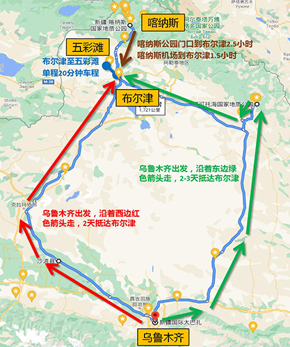
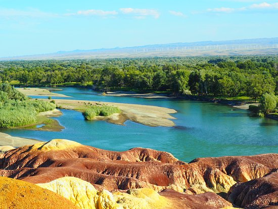

Rainbow Beach
Introduction:
Rainbow Beach is located in Burjin County, Altay Prefecture, northern
Xinjiang. It is located on the first and second terraces on the north bank
of the Erqi River, which flows into the Arctic Ocean in China. The rock
colors here are variable, and under the sunlight at sunset, the color of
the rock is mainly red, with green, purple, yellow, white, black, and
transitional colors, making it colorful. Whenever the wind blows, strange
sounds of varying lengths and heights are heard everywhere in ravines and
under rocks.
Basic information:
-
Located: 24km North of County, Burqin County 836600
- Tele: 0906 632 5170
- Open.Closes: 08:00-18:00

Scenic route
-
Take a car from Urumqi to Kanas and pass through the Rainbow Beach
along the way
-
After leaving Kanas, you can go to Wucai Beach from Kanas
Airport
-
There is no transportation within the Rainbow Beach Scenic Area
- Arrive at the scenic parking lot
- Go to the ticket office to buy a ticket
- Entering the scenic area
-
Follow the wooden plank path to reach various observation platforms
- End of play
- Going out of the park

Conclusion
-
The scenery is very beautiful, and it is best to watch it at sunset in
the evening
-
There are many tourists in the scenic area, and the impact of walking
is not significant, except for the fact that there are people beside
the photo shoot
-
The commercialization of the scenic area is mature, with paved
walkways and relatively safe walking
-
The accommodation conditions in Burqin are decent, and the price is
not as expensive as in Kanas
-
There are many choices to eat, and the price is also good
-
The city is basically the same as the coastal areas, with Han Chinese
as the main population and no significant differentiation
